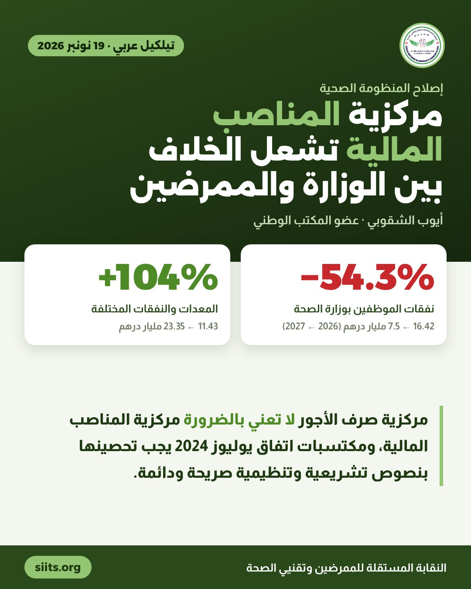

إصلاح المنظومة الصحية.. مركزية المناصب المالية تشعل الخلاف بين الوزارة والممرضين | أيوب الشقوبي على تيلكيل عربي

لم تعد أزمة الحوار بين وزارة الصحة والحماية الاجتماعية والنقابة المستقلة للممرضين وتقنيي الصحة مرتبطة فقط بتباين وجهات النظر حول المطالب المهنية، بل باتت تعكس اتساع الهوة بين الالتزامات المعلنة وانتظارات الشغيلة الصحية من تنزيلها على أرض الواقع. فبعد اتفاق 23 يوليوز 2024، الذي حمل مجموعة من المكتسبات والوعود، عادت ملفات مركزية المناصب المالية والحقوق الإدارية والمطالب المادية والأكاديمية إلى واجهة التوتر، وسط مطالب نقابية بضمانات قانونية صريحة تنهي حالة الغموض وتضع حدا لمخاوف التراجع عن المكتسبات.
وفي وقت تراهن فيه الوزارة على مواصلة الحوار لمعالجة الملفات العالقة، تصطدم هذه المقاربة بتنامي رفض نقابي لما يوصف بتدبير المطالب عبر الوعود وإحالتها المتكررة على اللجان التقنية، دون قرارات حاسمة أو آجال ملزمة.
وبين مطالب تنتظر الحسم ومخرجات حوار لا ترقى إلى مستوى التطلعات، يلوح شبح التصعيد من جديد، مع عودة الاحتجاج إلى الواجهة باعتباره خيارا للدفاع عن الحقوق والمكتسبات التي ترى الشغيلة الصحية أنها لم تعد تحتمل مزيدا من التأجيل.
■ الممرضون.. هواجس فقدان المكتسبات
بالتوازي مع تنزيل ورش المجموعات الصحية الترابية، تتصاعد التساؤلات بشأن انعكاسات هذا التحول المؤسساتي على الوضعية الإدارية والمالية لمهنيي الصحة، خصوصا في ما يتعلق بمستقبل مناصبهم المالية والضمانات القانونية المرتبطة بصفة الموظف العمومي. وبين تأكيدات رسمية باستمرار بعض المكتسبات ومطالب نقابية بتحصينها بنصوص واضحة، يظل هذا الملف أحد أبرز نقاط الخلاف حول مآلات إصلاح المنظومة الصحية.
في ما يتعلق بمضامين اتفاق 23 يوليوز 2024، كشف أيوب الشقوبي، عضو المكتب الوطني للنقابة المستقلة للممرضين وتقنيي الصحة، أن من أبرز المكتسبات التي تضمنها الاتفاق، والتي تشكل مطلبا أساسيا للأطر الصحية والتمريضية على وجه الخصوص، ضمان استمرار صفة الموظف العمومي وما يرتبط بها من حقوق وضمانات، وفي مقدمتها مركزية المناصب المالية واستمرار إدراجها ضمن الميزانية العامة للدولة، في إطار فصل نفقات الموظفين والأعوان، مؤكدا ضرورة الحفاظ على هذا المكتسب وتحصينه.
وتتجاوز الضمانات التي ينص عليها اتفاق 23 يوليوز 2024 مجرد الإقرار بصفة الموظف العمومي لمهنيي الصحة، لتشمل أيضا أداء أجورهم من الميزانية العامة للدولة عبر الخزينة العامة للمملكة، وضمان مناصب مالية قارة، فضلا عن صون وضعياتهم الإدارية وفق مقتضيات النظام الأساسي العام للوظيفة العمومية. وهي التزامات يرى الشقوبي أن استمراريتها تقتضي تحصينها بنصوص تشريعية وتنظيمية واضحة ومتكاملة.
وتطرح المادة 16 من القانون رقم 08.22 المتعلق بإحداث المجموعات الصحية الترابية إشكالا يرتبط بآلية انتقال الموظفين، بعدما اعتمدت «النقل التلقائي» إلى المجموعات الصحية المعنية، عوض «الإلحاق» باعتباره آلية انتقالية تضمن استمرار العلاقة النظامية الأصلية مع الإدارة العمومية. وفي هذا الإطار، يضع أيوب الشقوبي المسألة في صلب الوضعية القانونية والإدارية للأطر الصحية، معتبرا أن الأمر لا يتعلق باختلاف في المصطلحات القانونية، بل في طبيعة العلاقة النظامية التي تربط هذه الأطر بوزارة الصحة والحماية الاجتماعية والضمانات المرتبطة باستمرارها.
ولا يعني ذلك الجزم بأن اعتماد آلية «النقل التلقائي» يفضي بالضرورة إلى فقدان صفة الموظف العمومي، بالنظر إلى الضمانات المنصوص عليها في المادتين 17 و18 من القانون رقم 08.22، غير أن الشقوبي يرى أن هذه المقتضيات لا تكفي لتبديد التخوفات أو اعتبارها ضمانة تغني عن المطالبة بتحصين مختلف عناصر الصفة الوظيفية وما يرتبط بها من حقوق، من خلال نصوص قانونية واضحة ودائمة.
وتتعزز هذه التخوفات، بحسب الشقوبي، عند استحضار المعطيات المالية الواردة في مشروع قانون المالية لسنة 2027، التي تظهر تراجعا في اعتمادات فصل نفقات الموظفين والأعوان بوزارة الصحة من نحو 16.42 مليار درهم سنة 2026 إلى 7.5 مليار درهم سنة 2027، بانخفاض يبلغ 54.3 في المائة. وفي المقابل، ارتفعت اعتمادات فصل المعدات والنفقات المختلفة من 11.43 مليار درهم إلى 23.35 مليار درهم، بزيادة تناهز 104.25 في المائة.
وتكتسب هذه المؤشرات المالية دلالتها، وفق الشقوبي، من ارتباطها بالتحول الجاري في طريقة تمويل المنظومة الصحية وإعادة هيكلتها، لا سيما أن تقرير لجنة القطاعات الاجتماعية بمجلس النواب أشار صراحة إلى إعادة تخصيص جزء من كتلة الأجور ضمن إعانات التوازن الموجهة للمجموعات الصحية الترابية. وهو ما يفتح النقاش حول موقع نفقات الموظفين ضمن الهيكلة المالية الجديدة، ومدى انعكاس هذا التوجه على الضمانات المرتبطة بالوضعية الوظيفية للأطر الصحية.
■ المناصب المالية.. معركة التحصين
وفي مقابل تأكيد الوزارة استمرار مركزية تدبير الأجور وأدائها من طرف الدولة، يظل السؤال، بحسب الشقوبي، متعلقا بمستقبل مركزية المناصب المالية واستمرار إدراجها ضمن الميزانية العامة للدولة، فضلا عن طبيعة ارتباطها الإداري والمالي بوزارة الصحة، في ظل الانتقال التدريجي نحو نمط من التمويل والتدبير الترابيين للمجموعات الصحية.
ومن هذا المنطلق، يضع الشقوبي التمييز بين مركزية أداء الأجور ومركزية المناصب المالية في صلب مطلب النقابة، معتبرا أن ضمان صرف الأجور مركزيا عبر الخزينة العامة للمملكة، كما يجري التأكيد عليه، لا يستجيب وحده لمطلب تحصين الوضعية الوظيفية للأطر الصحية. فالمطلوب، وفق تصوره، هو ضمان استمرار مركزية المناصب المالية نفسها، باعتبارها إحدى الركائز المؤسساتية المرتبطة بالحفاظ على صفة الموظف العمومي.
وفي هذا السياق، شدد الشقوبي على أن مركزية صرف الأجور لا تعني بالضرورة مركزية المناصب المالية، كما أن انتظام أداء الأجور لا يكفي لضمان الإطار القانوني والمالي الذي تقوم عليه تلك المناصب، وهو ما يجعل تحصينها بنصوص واضحة جزءا أساسيا من ضمان استقرار الوضعية الإدارية لمهنيي الصحة.
وفي ضوء هذه التخوفات، يضع الشقوبي مطلب التوضيح القانوني الصريح في صدارة النقاش حول مستقبل الوضعية الإدارية لمهنيي الصحة، من خلال التساؤل عن مدى استمرار إدراج مناصبهم المالية ضمن الميزانية العامة للدولة وتبعيتها لوزارة الصحة، وما إذا كان تحويل الاعتمادات إلى المجموعات الصحية الترابية سيظل محصورا في نفقات التسيير أم سيمتد ليشمل كتلة الأجور أيضا.
كما يطرح تساؤلات بشأن الضمانات القانونية التي تحول دون نقل صلاحيات تدبير المناصب المالية والتصرف فيها إلى المجموعات الصحية الترابية مستقبلا، وتكفل استمرار صفة الموظف العمومي بكافة آثارها الإدارية والمالية والنظامية، بدل الاكتفاء بضمان انتظام صرف الأجور.
ويضع الشقوبي تحصين مكتسبات اتفاق يوليوز 2024 في صلب المطالب النقابية، معتبرا أن ضمان استمراريتها لا يمكن أن يستند إلى تصريحات أو تطمينات شفوية، أيا كانت الجهة الصادرة عنها، بل يتوجب التنصيص عليها ضمن مقتضيات تشريعية وتنظيمية صريحة ودائمة، تكفل حمايتها من أي تأويل أو تراجع.
■ وعود الوزارة لا توقف زحف الاحتجاجات
ولا ينحصر الدفاع عن مركزية المناصب المالية، وفق الشقوبي، في الجانب المحاسباتي المرتبط بتدبير الأجور، بل يتصل بضمان الاستقرار الإداري والوظيفي للأطر الصحية وصون الأسس التي تستند إليها صفة الموظف العمومي واستمرار آثارها القانونية.
وتدفع هذه المعطيات والمؤشرات، بحسب الشقوبي، إلى تنامي القلق النقابي من احتمال التراجع عن الالتزامات الواردة في اتفاق يوليوز 2024، وهو ما يعزز، في نظره، مشروعية اتخاذ موقف احتجاجي للدفاع عن هذه المكتسبات والمطالب، وصون حقوق الشغيلة التمريضية والصحية عموما.
وعلى مستوى الحوار الاجتماعي، لم تسفر أجوبة وزير الصحة خلال آخر اجتماع عقد في إطار افتتاح الحوار مع المكتب الوطني للنقابة، وفق الشقوبي، عن حلول عملية أو تصورات واضحة ومحددة بآجال زمنية مضبوطة، خصوصا بشأن المطالب الأساسية المتعلقة بمركزية المناصب المالية، وقائمة الأعمال التمريضية، والهيئة، وهي النقاط التي سبق للنقابة أن أثارتها في بلاغها الأخير.
وعلى مستوى مخرجات الحوار الاجتماعي، يصف الشقوبي رد وزير الصحة بشأن المطالب النقابية بأنه لم يرقَ إلى مستوى الجواب أو تقديم حلول ملموسة، فيما انحصرت الأجوبة المتعلقة بملفات أخرى في اقتراح تشكيل لجان ولجينات، في تكرار لمقاربة سبق اعتمادها خلال جولات حوارية سابقة دون أن تفضي إلى نتائج عملية تستجيب لانتظارات الشغيلة الصحية.
ويعبر الشقوبي عن رفض النقابة العودة إلى النهج نفسه، القائم على ترحيل الملفات وتأجيل البت فيها عبر إحداث لجان جديدة، دون التزامات محددة أو آجال زمنية واضحة، ودون مخرجات قابلة للتنفيذ والتقييم.
وفي مواجهة ما تعتبره النقابة استمرارا لسياسة التسويف، يضع الشقوبي شروطا واضحة لأي مخرجات للحوار الاجتماعي، تتمثل في إجراءات عملية والتزامات صريحة وآجال زمنية محددة وقريبة، تترجم إلى نتائج ملموسة على أرض الواقع. ويرى أن مرحلة الانتظار والتعويل على الوعود وتشكيل اللجان استنفدت مبرراتها، وأن المطلوب اليوم هو الانتقال من تدبير المطالب عبر التصريحات إلى الالتزام بتنفيذها.
ويحمل هذا الموقف، بحسب الشقوبي، رسالة تصعيدية مفادها أن استمرار غياب الحلول العملية قد يدفع النقابة إلى نقل احتجاجها إلى الميدان، مع التلويح بالخروج إلى شوارع الرباط دفاعا عن كرامة الأطر الصحية والتمريضية، وصونا لمكتسباتها وانتزاعا لحقوقها المشروعة.
فتح في تطبيق النقابة